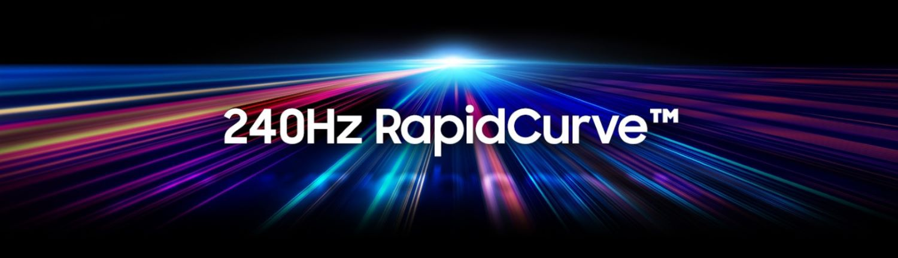
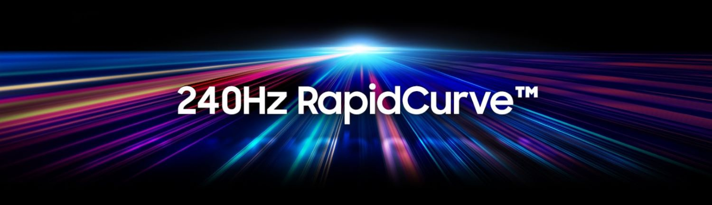

Viteză incredibilă și imersiune totală


Victoria asupra dușmanilor este asigurată chiar și în cele mai dinamice scenarii. Răspunsul ultrarapid cu rata de reîmprospătare de 240Hz elimină întârzierea și răspunde instantaneu la intrarea jucătorului. Răspunsul ecranului, urmărirea mai lină și mai precisă a mișcării cursorului vă permite să distrugeți cu încredere inamicii.
Campion de monitor curbat
Lider în categoria monitorului curbat. Samsung a fost pionier pe piața monitorului curbat prin introducerea primului monitor consumatorilor în 2015. Oferind consumatorilor o întreagă linie de monitoare curbate, Samsung conduce piața printre alți producători.
 

Scufundați-vă în curbură
Curbura victoriei. Experimentați imersiunea finală în fiecare joc pe un monitor curbat 1500R. Acum veți ieși mai des învingători datorită focalizării mai clare a punctului de vizare, care crește concentrarea.
Vederea este sigură
Tehnologia de afișare curbată a Samsung este perfect adaptată la caracteristicile câmpului vizual uman. Acum, jucătorul vede întregul ecran de la margine la margine, fără a schimba direcția de vizualizare. Ochii nu obosesc nici după o sesiune lungă de jocuri.

Tehnologie compatibilă G-Sync
Uitați de jocul agitat. Cu tehnologia compatibilă G-Sync, GPU se sincronizează dinamic cu rata de reîmprospătare, eliminând jitter-ul și lagul, menținând afișajul neted chiar și în situații de joc ultra-dinamice. Adaptarea dinamică a ratei de reîmprospătare a ecranului este o stabilitate ridicată a imaginii în cele mai intensive jocuri de resurse.